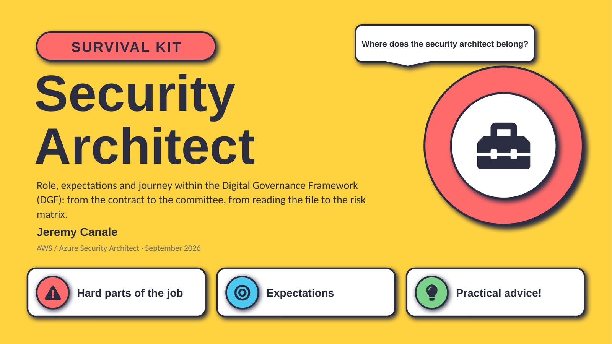
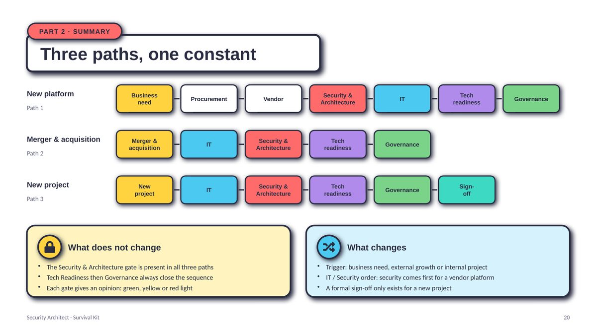
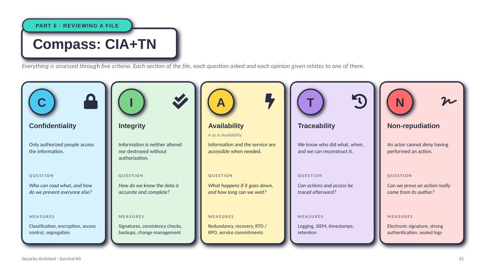
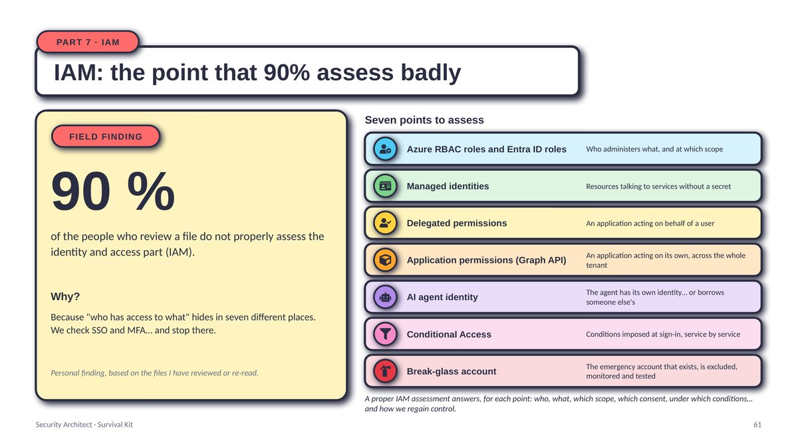
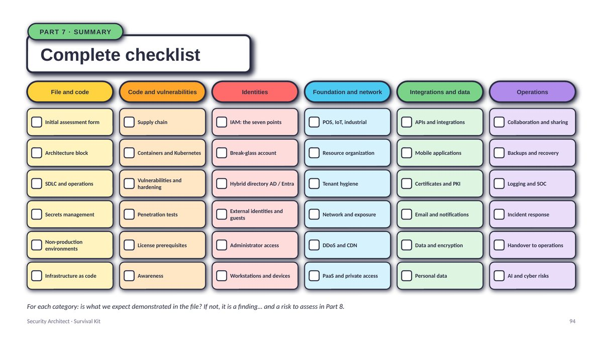
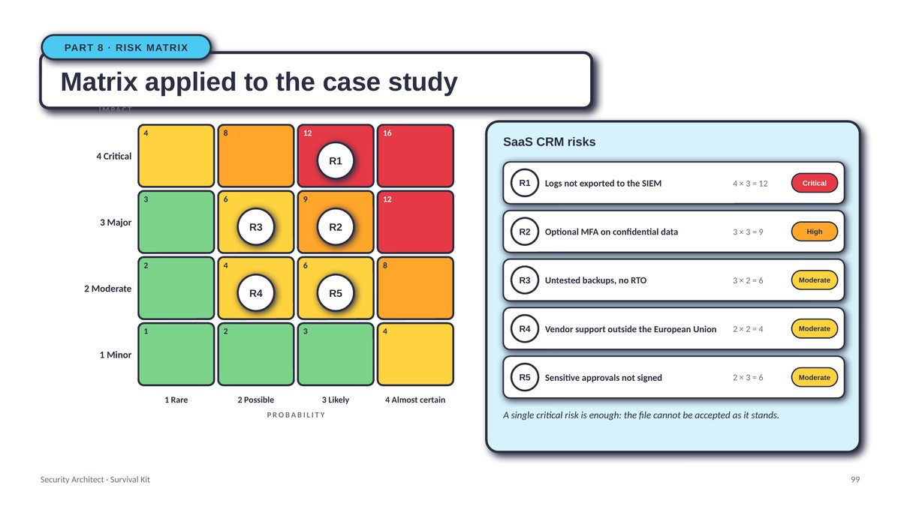
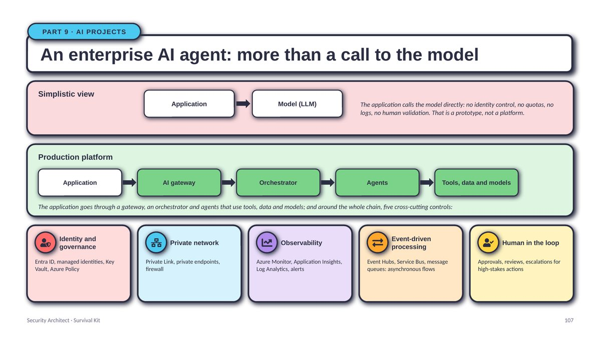
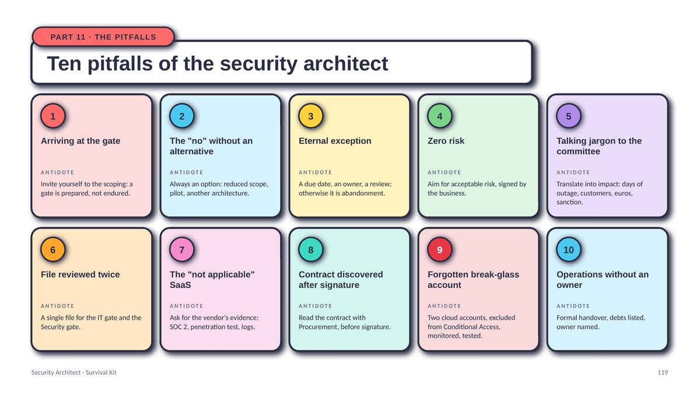

Executive
10 minutes- Finding: a real DGF is still rare
- DGF gates
- Business as risk owner
- Four statuses of a file
- Ten pitfalls
- Setting up a DGF in 90 days
Role, expectations and journey within the Digital Governance Framework (DGF): from the contract to the committee, from reading the file to the risk matrix.
Free, no sign-up. The link opens or saves the PDF directly.

Companies do not always understand where the security architect belongs: too early, too late, or outside the process. Summoned at the gate once the contract is already signed, they discover the requirements instead of confirming them. Called in without any criticality or RTO expressed by the business, they invent requirements, and get them wrong.
This kit gives concrete reference points to be in the right place at the right time, in particular within the Digital Governance Framework (DGF): the sequence of gates that governs every significant change to the information system, from buying a SaaS platform to integrating an acquired entity.
It is written from the field: more than ten years of AWS and Azure security architecture in large enterprises, across finance, banking, insurance, defense, pharma and retail, in France, Belgium, Switzerland and the Middle East.
of companies have a real DGF in place, with a dedicated application to track a project's life cycle. For the others, the gates live in emails and spreadsheets.
Personal finding, based on the organizations I have worked with: not a formal study.of the people who review a file do not properly assess the identity and access part (IAM). We check SSO and MFA, and stop there.
Personal finding, based on the files I have reviewed or re-read.A gate is prepared, not endured. Involving security from the business need costs one hour of scoping; discovering it at the gate costs weeks of renegotiation.
The document is designed to be skimmed in ten minutes or read end to end. Each profile has its own path.
Seven ideas that structure the kit, illustrated by the matching slides. Click an image to enlarge it.

New platform, merger and acquisition or new project: the trigger changes, the order of the gates changes, but the Security & Architecture gate is always there. For a vendor platform it even comes before IT: security qualifies the solution and the contract before the commitment.

Confidentiality, integrity, availability, traceability, non-repudiation: everything is assessed through these five criteria. Every section of the architecture file, every question asked and every opinion given maps to one of them.

"Who has access to what" hides in seven different places: Azure RBAC and Entra ID roles, managed identities, delegated permissions, Graph application permissions, AI agent identity, Conditional Access, break-glass account. The kit walks through each of them for Azure and for AWS, with the classic mistake of each.

Secrets, infrastructure as code, containers, penetration tests, licenses, network, PaaS, APIs, mobile, PKI, email, encryption, GDPR, backups, SOC, incident response, awareness, AI… One slide per category: what we expect, and what does not pass.

A finding without a scenario is not a risk; a risk without an owner is not managed; a risk without an exit is not tracked. The kit runs through the full chain: impact × probability score from 1 to 16, thresholds, four statuses of a file, risk card, opinion template.

AI gateway, orchestrator, agents, tools, data and models, and five cross-cutting controls around the chain. The reference architecture layer by layer, and what we check at each level.

Web exposure, SaaS integration, cloud landing zone, partner access, sensitive data, Zero Trust remote access, deployment pipeline, AI agent: eight ready-to-reuse architecture patterns, with their rules.
Ready-to-use templates, reusable as they are in your own files.
Security is built from the design stage; the security architect is its guarantor.
Knowledge, know-how, attitude: posture matters as much as technique.
Whatever the DGF path, the Security & Architecture gate is always there; only its position changes.
Yellow light, recorded exceptions, tracked action plans: secure without blocking.
124 slides, free, no sign-up. Share them with your CISO, your project managers, your procurement team: that is what they are for.